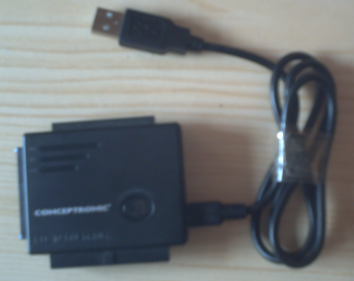
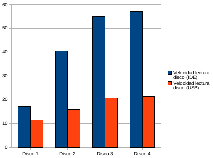
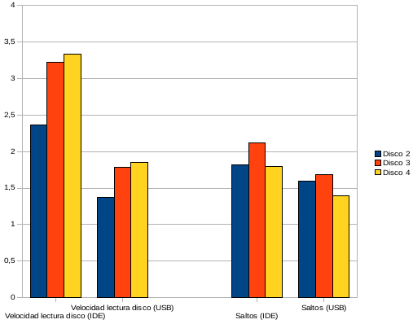
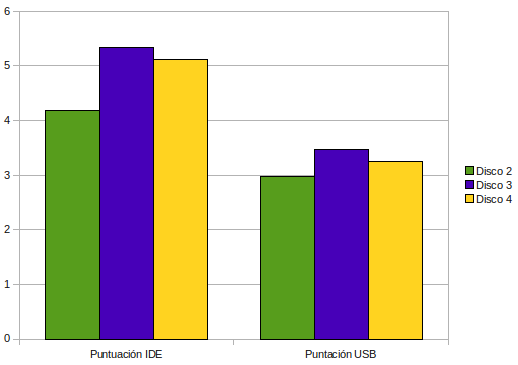

El objetivo del trabajo es medir el rendimiento de varios discos duros (incluyendo a su sistema de archivos, que es evaluado en conjunto) trabajando con bases de datos, para ello seleccionaré varias pruebas que realizan tareas semejantes a un sistema de bases de datos en como posicionamientos, lecturas secuenciales, etc.
Adicionalmente supongo que las bases de datos están situadas en un medio de almacenamiento externo, por lo que también realizaré los mismos tests para los discos duros conectados mediante USB.
Con la finalidad de eliminar las posibles influencias del resto del sistema sobre las mediciones inicio el sistema desde un CD de arranque (o LiveCD) de la distribución de GNU/Linux Ubuntu en su versión más actual (9.04, codename Jaunty Jackalope) de forma que el sistema operativo resida en la RAM y no influya de manera alguna sobre el comportamiento y el rendimiento de los discos duros.
Aunque no es importante, la especificación del equipo utilizado es la siguiente:
| Características | |
|---|---|
| Procesador | AMD Athlon XP 2100+ (1.73 GHz) |
| RAM | 512 MB DDR |
| Placa base | ASUS A7N8X-X |
| IDE | 2 x UltraDMA 133/100/66/33 |
| USB | 3 x USB 2.0 |
Los discos analizados son:
| Modelo | Estándar | Capacidad | RPM | S.A. | |
|---|---|---|---|---|---|
| NOTA: La fila S.A. indica el sistema de archivos en el cual se han realizado las pruebas. | |||||
| Disco 1 | Maxtor 91021U2 | ATA-66 | 10.1 GB | 5400 | FAT32 |
| Disco 2 | Seagate ST340016A | ATA-100 | 40.0 GB | 7200 | EXT3 |
| Disco 3 | Seagate ST380011A | ATA-100 | 80.0 GB | 7200 | XFS |
| Disco 4 | Maxtor Diamond Plus 9 | ATA-133 | 160.0 GB | 7200 | NTFS |
La interfaz USB 2.0 con soporte para conexión IDE/SATA:

Interfaz USB utilizada
Por último, señalar que he utilizado un cable ATA-100 (40 pines y 80 cables) para que los discos duros funcionen a pleno rendimiento, ya que utilizar un cable de 40 cables reduciría las prestaciones a ATA-3.
Como he mencionado anteriormente, se trata de un sistema que pese a que se haya inicializado desde un LiveCD es totalmente operativo, por lo tanto los servicios que ofrece son los típicos que ofrece un sistema orientado al usuario.
En lo referente a los discos duros, ofrecen los mismos servicios que cualquier medio de almacenamiento: lectura/escritura de archivos (o bloques a un nivel más bajo), posicionamiento aleatorio, tecnología SMART, etc.
Para la velocidad de lectura utilizaré los megabytes por segundo (MB/s) y para el posicinamiento aleatorio el número medio de saltos por segundo. Para ambas magnitudes mayor es mejor (HB).
Para todos los discos duros utilizaré el mismo ordenador, por lo que el hardware no influirá. En el caso del software pasa algo parecido; debido al arranque de la máquina desde el LiveCD, el sistema operativo se alojará en la RAM por lo que este elemento no influirá de ninguna manera en el rendimiento del disco duro y obtendremos el uso exclusivo del mismo.
Por otro lado, también es relevante la forma de conexión de cada disco duro con el PC para que esto no influya de forma alguna cada uno será conectado como Maestro en el IDE primario, por lo que el sistema será apagado y encendido para cada disco, estableciendo de paso el mismo estado del sistema para cada uno. Otro factor que quizás influya es el cable utilizado, siempre será el mismo; el cable ATA-100 mencionado anteriormente.
En el caso de la conexión por USB se reiniciará el sistema de la misma forma.
Por último, otro punto importante que puede afectar a las prestaciones son las diferentes particiones y sistemas de archivos de las mismas que alojen los discos, para una prueba (velocidad de lectura) esto es indiferente, sin embargo, para el otro (posicionamiento aleatorio) es más influyente.
Según he mencionado en el apartado anterior, no existen factores que cambien durante el estudio, por lo que se hace innecesario estudiar factores y establecer niveles.
Ya que disponemos del sistema completo y totalmente funcional, utilizaré la técnica de medición que es la más apropiada. Para ello utilizaré dos benchmarks sintéticos:
Los resultados han sido obtenidos calculando las medias aritméticas de varias repeticiones de los tests, cada disco duro ha sido conectado un par de veces; una mediante una cable IDE directamente a la placa base y otra mediante USB gracias a la interfaz.
Con el fin de obtener los resultados, realizaré con el programa hdparm la medición de la velocidad de lectura que consiste en leer desde el disco al buffer del sistema sin tener ningún dato cacheado previamente.
El test realizado por el programa bonnie++ consistirá en saltar a bloques seleccionados aleatoriamente de un fichero durante un intervalo de tiempo y realizar la media de saltos por segundo.
Como ya hemos comentado en apartados anteriores, en esta evaluación no existirán niveles (los factores no cambian) de forma que para obtener los valores simplemente ejecutamos los benchmarks mencionados 3 veces por cada disco y conexión (IDE/USB) y se realizan la medias aritméticas pertinentes.
Trás la realización de todas las pruebas y la anotación de los resultados obtenemos:
| Disco 1 | Disco 2 | Disco 3 | Disco 4 | ||
|---|---|---|---|---|---|
| NOTA: El valor superior es el resultado con la conexión IDE y el inferior con la conexión USB. | |||||
| Velocidad de lectura (MB/s) | 17.11 11.62 |
40.51 15.89 |
55.09 20.74 |
57.04 21.47 |
|
| Saltos aleatorios por segundo | 78.5 81.0 |
142.7 129.5 |
166.6 136.7 |
140.6 113.1 |
|
En rojo resalto el valor que ha obtenido el mejor resultado. También he resaltado en verde los valores pertenecientes al Disco 1 ya que es el que obtiene resultados más bajos y por ello me es útil para utilizarlo como base para el cálculo de los índices.
Podemos observar en los resultados obtenidos que los valores correspondientes a los saltos/segundo no difieren practicamente en la conexión IDE/USB, sin embargo, la velocidad de lectura que se vé altamente reducida:

Velocidades de lectura de disco (MB/s)
En la gráfica superior se puede observar claramente este hecho; la velocidad se reduce un 30% en el mejor de los casos, en el peor llega a reducirse hasta un 62%, algo bastante raro, ya que supuestamente la especificación de USB 2.0 garantiza hasta 60 MB/s de transferencia.
Observando los resultados detenidamente parece que existe una cota superior en cuanto a la tranferencia con la conexión USB, este límite se sitúa en torno a los 20-25 MB/s y puede ser impuesto por la propia interfaz USB utilizada debido a su propia tecnología de fabricación.
Resultados calculados escogiendo el Disco 1 como base (HB en todos los casos):
| Disco 1 | Disco 2 | Disco 3 | Disco 4 | ||
|---|---|---|---|---|---|
| NOTA: El valor superior es el resultado con la conexión IDE y el inferior con la conexión USB. | |||||
| Velocidad de lectura (MB/s) | 1.00 1.00 |
2.37 1.37 |
3.22 1.78 |
3.33 1.85 |
|
| Saltos aleatorios por segundo | 1.00 1.00 |
1.82 1.60 |
2.12 1.69 |
1.79 1.40 |
|
Y representación gráfica de los mismos:
NOTA: Resulta bastante obvio no representar al Disco 1, ya que todos sus valores son 1, me interesa más representar todos los resultados respecto a él.

Representación de los índices
Observando detenidamente los resultados podemos afirmar que tenemos un empate técnico en cuanto a resultados, por un lado el el Disco 4 es el ganador en lo que respecta a velocidad de lectura, algo lógico ya que es de mayor capacidad y posiblemente construido con una tecnología más nueva y más rápida que el resto. Recordemos que en esta prueba todos los discos están en igualdad de condiciones debido a que es indiferente el sistema de archivos.
Sin embargo, esto no ocurre en la prueba de saltos aleatorios en la que se lleva la palma el Disco 3. Como sabemos, esta prueba no es independiente del sistema de archivos, algo que puede influir negativamente en el resultado del Disco 4 debido a su sistema de archivos (NTFS).
Alternativamente podemos sumar las puntuaciones y obtener cual ha sido el disco de mejor comportamiento para los dos tipos de conexión, aunque cabe esperar que sea el mismo:
| Disco 2 | Disco 3 | Disco 4 | |||
|---|---|---|---|---|---|
| NOTA: De nuevo en rojo el ganador | |||||
| Puntación IDE | 4.19 | 5.34 | 5.12 | ||
| Puntación USB | 2.97 | 3.47 | 3.24 | ||
Representado graficamente:

Puntuaciones
Definitivamente podemos afirmar que nuestro ganador para ambos tipos de conexiones es el Disco 3 (seguido de cerca por el Disco 4), ya que aunque no sea el de mejor puntuación en la prueba de lectura su resultado en la prueba de saltos lo compensa.
Si analizados los resultados de las pruebas independientemente, la elección del disco dependerá de las necesidades de nuestra base de datos, es decir, ya que el Disco 4 (con NTFS) obtiene la mejor puntuación en la prueba de lectura nos será más útil para bases de datos en las que las tuplas contengan muchos elementos o bien que los datos sean leidos consecutivamente (p.e. sean frecuentes los listados).
Sin embargo, el Disco 3 (con XFS) será más útil para bases de datos en las cuales los datos son accedidos de forma más espontánea y desordenada y las tuplas más reducidas.
Pero si tenemos en cuenta el conjunto de las dos pruebas, claramente elegiremos el Disco 3.
Por último concluir que almacenar la base de datos en un medio externo USB reduciría mucho las velocidades de transferencia, por lo que utilizaré una conexión IDE.